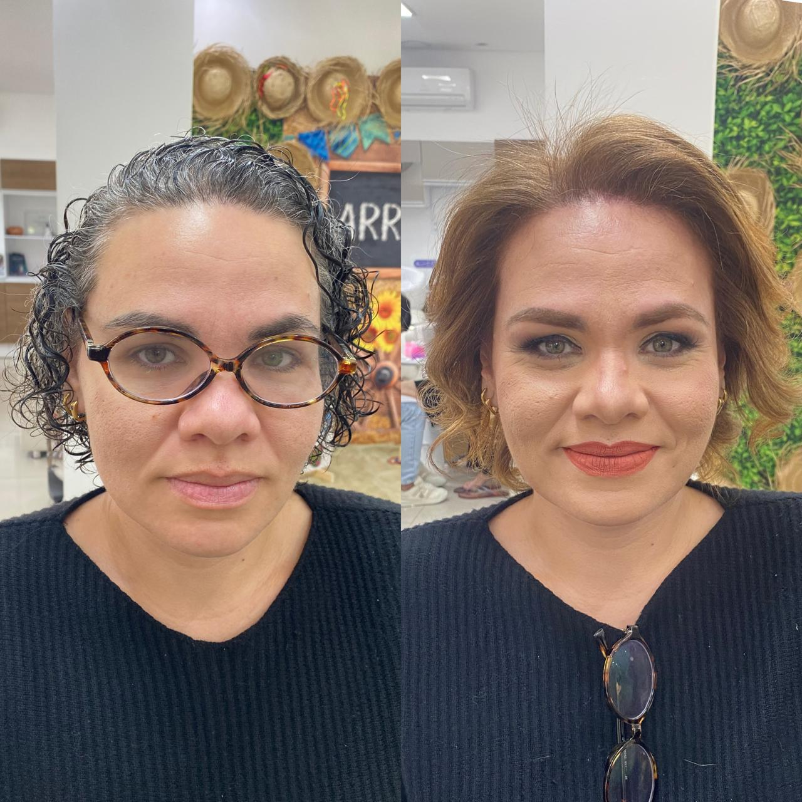
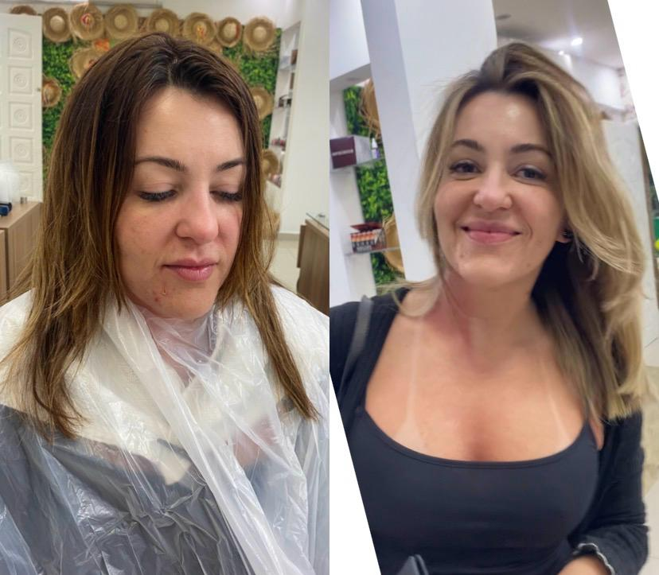

antes e depois
Mais do que uma transformação no cabelo.
Cada uma dessas clientes chegou com uma ideia e saiu se olhando diferente no espelho. Este é o antes e o depois de quem já sentou na cadeira da Luciana.




o que dizem
Avaliações de quem já passou por aqui.
Comentários públicos de clientes, reproduzidos na íntegra.
Avaliações no Google
Ver todas no Google →
★★★★★
Eu simplesmente amei a experiência no salão! O espaço é lindo, aconchegante e super bem cuidado. Os profissionais são incríveis — atenciosos, dedicados e com um talento que faz toda a diferença. Saí de lá me sentindo renovada e muito satisfeita! Parabéns a toda a equipe pelo excelente trabalho.
★★★★★
Este salão proporciona uma experiência única e personalizada. Com uma equipe excepcionalmente atenciosa, cada corte é mais do que uma transformação capilar; é um momento de confiança, onde fecho os olhos sabendo que minha beleza está em mãos talentosas e humanas.
★★★★★
O melhor salão da região! Os profissionais são maravilhosos e atenciosos. Um cuidado muito especial com os clientes. Amoooo!
★★★★★
Vou neste salão a muitos anos e sou sempre muito bem atendido! Recomendo a todas as pessoas, trabalhos muito bem feitos e muito cuidado!
Quer o seu antes e depois?
Manda uma foto do seu cabelo no WhatsApp e a gente conversa sobre o que dá para fazer, com sinceridade sobre o que o fio aguenta.
Agendar no WhatsApp